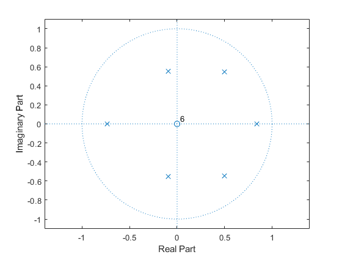
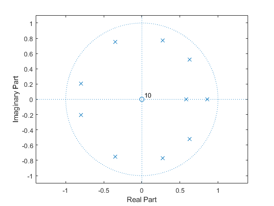
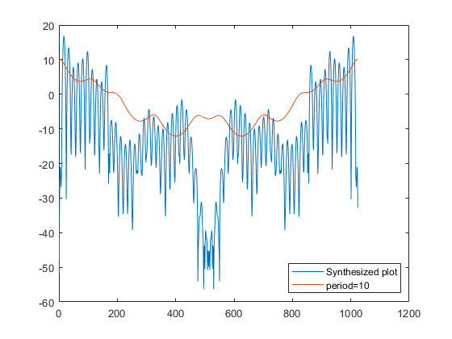
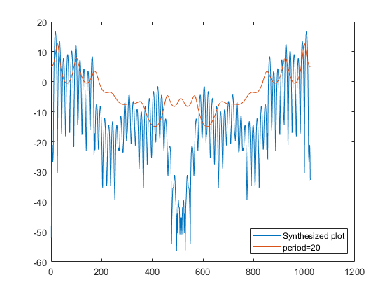
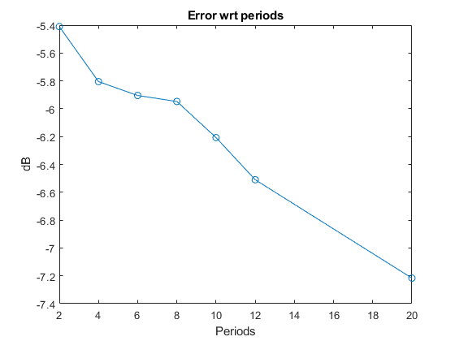

fs = 8000;
s_a = audioread('a.wav');
l_a = length(s_a);
tham = 30e-3*fs;
ham = hamming(tham);
y = s_a;
x = 1:1:240;
for i = 1:1:240
x(i) = ham(i)*y(i+200);
end
per = 20;
r = zeros(per, 1);
r = r*0;
r0 = 0.0;
for j = 1:1:240
r0 = r0 + x(i)*x(i);
end
for i = 1:1:per
for j = per+1:1:240
r(i) = r(i)+ x(j)*x(j-i);
end
end
[a2 e2] = levinson(r, 2);
[a4 e4] = levinson(r, 4);
[a6 e6] = levinson(r, 6);
[a8 e8] = levinson(r, 8);
[a10 e10] = levinson(r, 10);
[a12 e12] = levinson(r, 12);
[a20 e20] = levinson(r, 20);
figure(1)
zplane(e6, a6);
figure(2)
zplane(e10, a10);
buf1 = 0.0;
for i= 1:1:per
buf1 = buf1 + a20(i)*r(i);
end
G = r0 - buf1;
G = sqrt(G);
xh2=zeros(1024,1);
per=2;
E=e2;
ak=a2;
for i=0:1024,
ex = exp(-(0:per)*1i*(i/1024 * 2 * pi));
xh2(i+1) = E/(abs(ex*ak')).^2;
end
xh2 = sqrt(xh2);
xh4=zeros(1024, 1);
per=4;
E=e4;
ak=a4;
for i=0:1024,
ex = exp(-(0:per)*1i*(i/1024 * 2 * pi));
xh4(i+1) = E/(abs(ex*ak')).^2;
end
xh4 = sqrt(xh4);
xh6=zeros(1024, 1);
per=6;
E=e6;
ak=a6;
for i=0:1024,
ex = exp(-(0:per)*1i*(i/1024 * 2 * pi));
xh6(i+1) = E/(abs(ex*ak')).^2;
end
xh6 = sqrt(xh6);
xh8=zeros(1024, 1);
per=8;
E=e8;
ak=a8;
for i=0:1024,
ex = exp(-(0:per)*1i*(i/1024 * 2 * pi));
xh8(i+1) = E/(abs(ex*ak')).^2;
end
xh8 = sqrt(xh8);
xh10=zeros(1024, 1);
per=10;
E=e10;
ak=a10;
for i=0:1024,
ex = exp(-(0:per)*1i*(i/1024 * 2 * pi));
xh10(i+1) = E/(abs(ex*ak')).^2;
end
xh10 = sqrt(xh10);
xh12=zeros(1024, 1);
per=12;
E=e12;
ak=a12;
for i=0:1024,
ex = exp(-(0:per)*1i*(i/1024 * 2 * pi));
xh12(i+1) = E/(abs(ex*ak')).^2;
end
xh12 = sqrt(xh12);
xh20=zeros(1024, 1);
per=20;
E=e20;
ak=a20;
for i=0:1024,
ex = exp(-(0:per)*1i*(i/1024 * 2 * pi));
xh20(i+1) = E/(abs(ex(1:20)*ak')).^2;
end
xh20 = sqrt(xh20);
fft_a = mag2db(abs(fft(x, 1024)));
figure(3);
plot((1:1024), [fft_a' mag2db(xh2(1:1024))])
legend({'Synthesized plot', 'period=2'}, 'Location', 'SouthEast')
figure(4);
plot((1:1024), [fft_a' mag2db(xh4(1:1024))])
legend({'Synthesized plot', 'period=4'}, 'Location', 'SouthEast')
figure(5);
plot((1:1024), [fft_a' mag2db(xh6(1:1024))])
legend({'Synthesized plot', 'period=6'}, 'Location', 'SouthEast')
figure(6);
plot((1:1024), [fft_a' mag2db(xh8(1:1024))])
legend({'Synthesized plot', 'period=8'}, 'Location', 'SouthEast')
figure(7);
plot((1:1024), [fft_a' mag2db(xh10(1:1024))])
legend({'Synthesized plot', 'period=10'}, 'Location', 'SouthEast')
figure(8);
plot((1:1024), [fft_a' mag2db(xh12(1:1024))])
legend({'Synthesized plot', 'period=12'}, 'Location', 'SouthEast')
figure(9);
plot((1:1024), [fft_a' mag2db(xh20(1:1024))])
legend({'Synthesized plot', 'period=20'}, 'Location', 'SouthEast')
e = [e2, e4, e6, e8, e10, e12, e20];
periods = [2 4 6 8 10 12 20];
figure(10);
plot(periods, mag2db(e), 'o-');
title('Error wrt periods')
xlabel('Periods')
ylabel('dB')
    